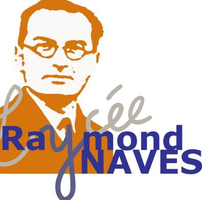
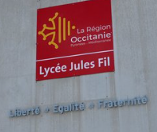
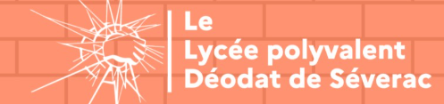
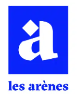

tomas@vidal:~/parcours$
Parcours
Mes formations, mon alternance et mes stages.
Formations
2025 – 2027
BTS SIO option SISR, en alternanceÉcoles Vidal, Toulouse
2024 – 2025
Certificat de spécialisation Services Numériques aux Organisations (CS SNO)Lycée Raymond Naves, Toulouse

2022 – 2023
Baccalauréat général, spécialités SES, HGGSP et NSILycée Jules Fil, Carcassonne

Expériences professionnelles
2025 – 2027
Alternant technicien systèmes et réseauxÉcoles Vidal, Toulouse
- Support de niveau 1 et 2 pour le campus et les écoles partenaires
- Administration des comptes, des postes, du réseau et du pare-feu
- Voir le détail de mes missions
Mars – avril 2025
Stage auprès de l'informaticien et du DDFPTLycée Déodat de Séverac, Toulouse
- Gestion du parc informatique et des tickets dans GLPI
- Communication du lycée sur LinkedIn : bannière, logo et publications

Nov. – déc. 2024
Stage auprès du DDFPT et de l'AED TICELycée des Arènes, Toulouse
- Rénovation de la page ENT du lycée
- Installation physique et mise en réseau d'une imprimante et d'un PC

Projets du CS SNO
Chatbot Botpress
Chatbot relié à des API pour automatiser les réponses, avec son dossier technique.
Guide KeePass
Procédure pour aider les utilisateurs à gérer leurs mots de passe de façon sécurisée.
Prise en main de GLPI
Gestion de parc et de tickets, compte rendu complet.
Site web Ecotopia
Cahier des charges, persona, arborescence, maquette puis site.